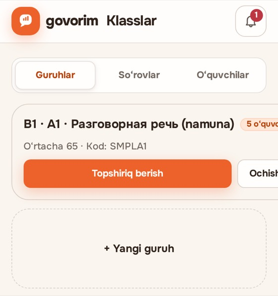
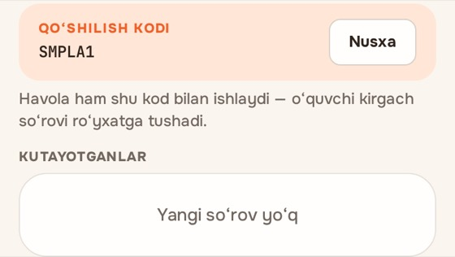
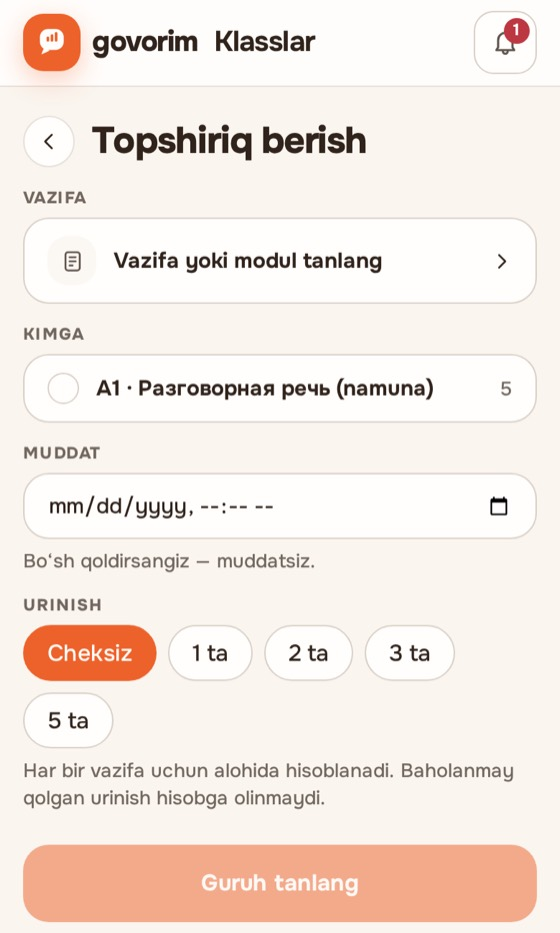

Admin sizni o‘qituvchi qilib qo‘shgan. Ro‘yxatdan o‘tish shart emas — o‘z telefon raqamingiz bilan kirasiz va tizim sizni o‘qituvchi paneliga olib boradi.
Pastdagi (kompyuterda — yuqoridagi) menyu:
| Bo‘lim | Nima uchun |
|---|---|
| Bosh | Diqqat talab qiladigan ishlar: tekshirilmagan javoblar, yangi so‘rovlar, bahosi tushgan o‘quvchilar. |
| Klasslar | Guruhlaringiz, qo‘shilish so‘rovlari va o‘quvchilar ro‘yxati. |
| Navbat (o‘rtadagi tugma) | AI baholagan, siz hali ko‘rmagan javoblar. Tugmadagi raqam — ularning soni. |
| Kontent | O‘zingiz yaratgan modul va vazifalar. |
| Analitika | Sinf natijalari, ko‘p uchraydigan xatolar, jurnal (Excel’ga yuklab olish). |
Profilingiz va Chiqish — yuqori o‘ng burchakdagi doiracha (avatar) orqali. Qo‘ng‘iroqcha belgisida yangi xabarlar (masalan, yangi so‘rov) ko‘rinadi.

O‘quvchilar o‘zlari ro‘yxatdan o‘tadi. Siz ularga faqat havola yoki kod berasiz. O‘quvchini telefon raqami bilan o‘zingiz qo‘sha olmaysiz.

O‘quvchilarga yuborish uchun tayyor xabar (havolani o‘zingiznikiga almashtiring):
O‘quvchi havolani ochsa yoki kodni yozsa, sizga so‘rov keladi. Siz tasdiqlamaguningizcha u guruhga kirmaydi — begona odam havolani topib olsa ham, o‘zi qo‘shilib qola olmaydi.
Xuddi shuni guruhning «A‘zo qo‘shish» sahifasidagi KUTAYOTGANLAR ro‘yxatida ham qilish mumkin: Guruhga qo‘shish / Rad etish.

Muddatni o‘zgartirish yoki bekor qilish: guruh sahifasi → Faol topshiriqlar → qatordagi menyu → «Muddatni o‘zgartirish» yoki «Topshiriqni bekor qilish». Berilgan javoblar va baholar saqlanib qoladi.
Sizning modullaringizni faqat sizning guruhlaringiz ko‘radi va ular o‘quvchilar uchun to‘liq bepul.
Qoralama — hech kim ko‘rmaydi. Faol — nashr qilingan. Yashirish uchun: «Qoralamaga qaytarish».
Siz boshqa raqam bilan kirgansiz yoki admin hali sizni o‘qituvchi qilmagan. Adminga qaysi raqam bilan kirayotganingizni ayting.
Avatar → Ma’lumot → Telefon raqamni o‘zgartirish → yangi raqam → kod yangi raqamning Telegram’iga keladi. Eski raqamga kira olmasangiz — adminga yozing.
Yo‘q. Faqat havola yoki kod orqali — bu o‘quvchining roziligisiz hech kim guruhga qo‘shilmasligi uchun.
Guruh sahifasi → Sozlama → Qo‘shilish kodini yangilash. Eski havola va kod darhol ishlamay qoladi, guruhdagilar joyida qoladi. O‘quvchilarga yangi havolani yuboring.
Rad ni bosing. U guruhga kirmaydi.
Guruh sahifasi → Sozlama → o‘quvchi yonidagi Chiqarish. Uning javoblari va baholari saqlanadi.
Ha. O‘quvchi har bir guruhning havolasini ochadi, siz har birini alohida tasdiqlaysiz.
A‘zoliklar va guruhning ochiq topshiriqlari o‘chadi, o‘quvchilarning javoblari va baholari qoladi. Ortga qaytarib bo‘lmaydi — tasdiqlash uchun guruh nomini yozasiz.
Navbat → Tahrir → Qo‘lda baholash. Sizning bahoyingiz AI bahosi o‘rniga hamma joyda ishlatiladi.
Premium bering (9-bo‘lim) yoki o‘sha vazifani topshiriq qilib bering — sizga berilgan topshiriq Premiumsiz ham ochiladi. O‘zingiz yaratgan modullar har doim bepul.
Javob audiolari 3 oydan keyin o‘chiriladi. Transkript va baholar qoladi.